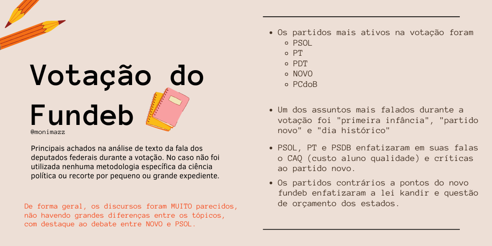
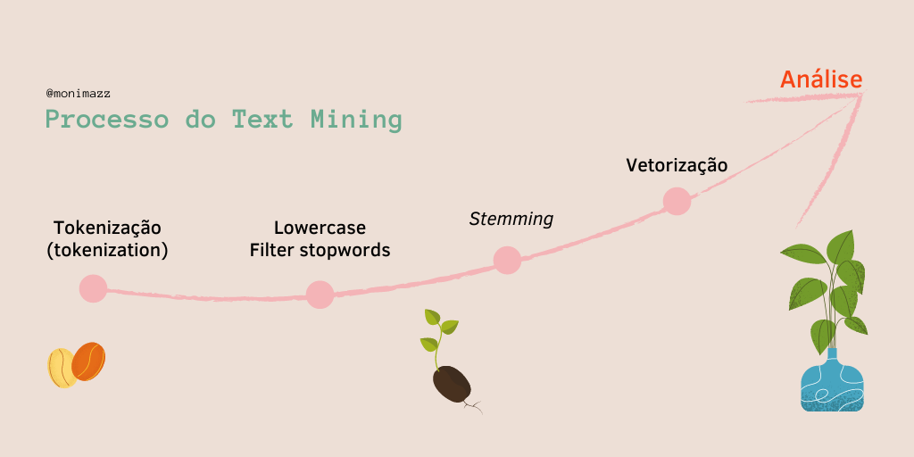
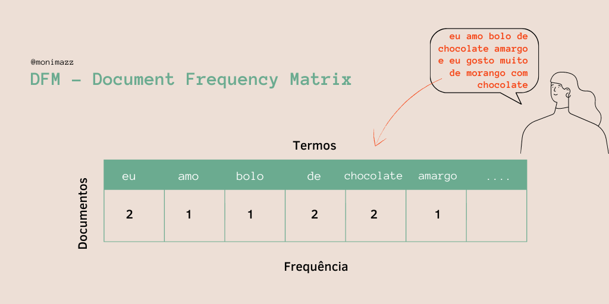
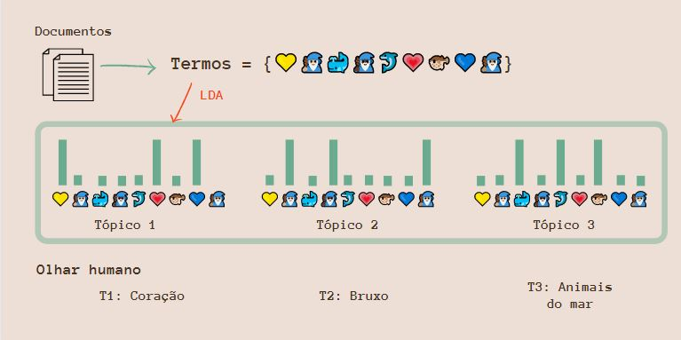
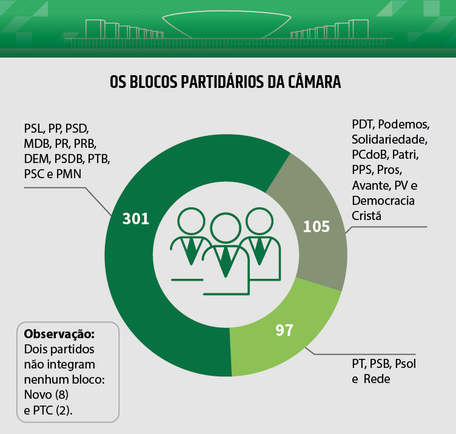
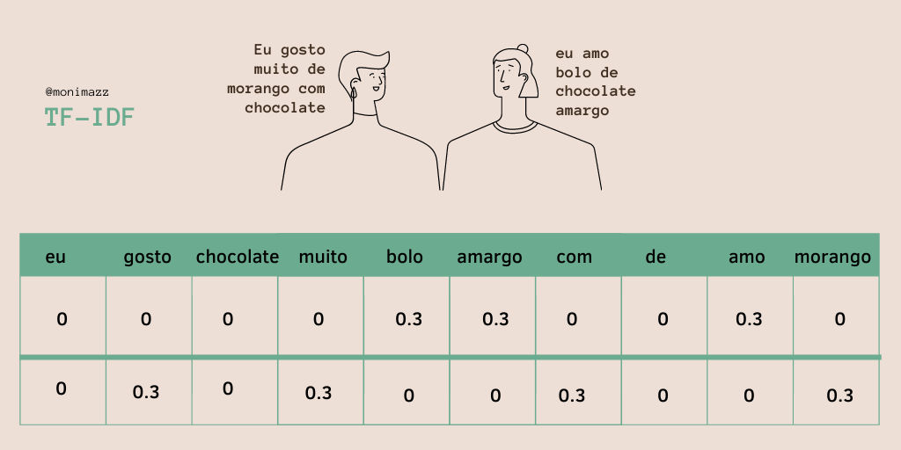

Introdução ao text mining: O caso da votação do FUNDEB
Bem-Vindes
Ocorreu dia 21/07 a votação histórica em dois turnos do Novo Fundeb, texto que potencialmente irá modificar o cenário da educação no Brasil, aumentando o investimento do Governo Federal na educação! Abaixo um post do @mapaeducacao para entender melhor o que ocorreu:
Para obter os dados fui até o site da Câmara dos Deputados e copiei todo o conteúdo da ordem do dia (votação) e depois deixei em formato tidy, fazendo mais ou menos manualmente. Se você souber uma forma de transformar texto corrido (tipo pdf) em um formato para análise, ou seja, identificando as variáveis e documentos, deixa aqui nos comentário!
Antes de iniciar o tutorial, para os curiosos já vou apresentar quais foram os resultados iniciais da análise de conteúdo das votações:

Agora… O tutorial!
Basicamente o pacote que vou usar é o tidytext como é uma introdução, tudo o que realizei pode ser encontrado no Livro Tidytext Mining, apesar de gostar mais do quanteda e do spacyr, o tidytext é um otimo pacote para começar a análise de texto, ainda mais quando a informação está estruturada em tabela.
library(quanteda) #pacote similar ao tidytext, vou usá-lo de forma pontual
require(readxl) # le arquivos em excel
library(wordcloud) #faz nuvem de palavras
library(tidyverse) #maravilhoso pacotão
library(tidytext) #Pote de ouro, trabalharemos com ele.
library(topicmodels) # Pacote possui diversos modelos, usaremos o LDA (vou explicar)
library(igraph) #para criar graficos de rede (grafos)
library(ggraph) #para visualizar a redeVamos adicionar as stop_words agora. Porque faço isso? Quando fui analisando o texto percebi que algumas palavras não agregavam muito a análise ou que o próprio stop_word não reconhecia, assim fiz esse esqueminha:
stop_pt <-as.data.frame(stopwords("pt")) #subindo (quanteda) e já colocando como tabela
names(stop_pt) <- "stop" #renomeando a coluna
stop_sr <- as.data.frame(c("sr", "sra", "srs", "sras", "é", "vamos", "vou", "quero",
"neste", "dorinha")) #subindo e já colocando como tabela
names(stop_sr) <- "stop" #renomeando a coluna
stop_pt <- rbind(stop_pt, stop_sr) #juntando as duasQualquer processo de análise dos dados parte primeiro do pré-processamento e tratamento da base de dados, ou seja, temos que deixá-los bonitinhos e organizados para rodar nos nossos modelos.

Text mining 101 🎓
Corpus é uma coleção de documentos
Um documento é composto de tokens. Um documento pode ser várias coisas, depende do que você determina como documento.
Tokens é a divisão do texto, podendo ser:
- unigrams ( ‘amo’ , ‘bolo’ , ‘de’ , ‘chocolate’)
- bigrams (‘amo_bolo’, ‘bolo_de’, ‘de_chocolate’)
- etc..
Lowercase: deixar todos os termos em minúscula. Deve-se fazer isso porque o R não compreende a diferença entre maiúscula e minúscula, então quando você rodar análises ele não vai perceber que ‘Banana’ e ‘banana’ são a mesma palavra.
Filter e Stopwords: filtrar a base de termos, retirando todas as stop_words, que são palavras como “a”, “de”, “é”… Também pode ser usado para palavras muito comuns que não vão agregar na sua análise.
Steeming: recorta a palavra ou coloca ela no seu radical. Infelizmente esse método para lingua portuguesa ainda está sendo construído, especialmente para o Brasil que ainda que tem várias girias, acho que deve ser ainda mais complicado.Por isso, apesar de muito recomendável que seja feito, fique atenta a problemas na sua base de dados! Um recomendado é o ptstem
Vetorização: para análises mais profundas devemos vetorizar a informação, para isso usamos o famoso: DFM - Document Frequency Matrix. Basicamente cada linha representa um documento e cada coluna um termo (podendo estar no método utilizado de unigram, bigram e etc)

- Análise: Dentre os métodos de análise de texto o mais comum se chama bag-of-words BOW . Basicamente você coloca todas as palavras (tokenizadas) dentro de uma ‘sacola’, ou seja, sem ordem, ignorando erros de escrita, gramática e outras (por isso a importância do pré-processamento).
‘mas eu preciso da ordem, existem frases que só tem sentido juntas, como expressões comuns’
Não tema pequeno gafanhoto 🐉! há formas de você lidar com isso.
Para além do modelo de BOW: Ngram Sequences, Named Entity Extraction e Topic Models. No caso, não vou utilizar o steeming porque estou acostumada a usar ele mais no quanteda. Também não vou utilizar o BOW, mas o Ngram Sequences porque eu quero analisar a ordem dos termos.
Antes de começar vamos explorar rapidamente os dados…
Quais foram os partidos que mais se manifestaram? Quais foram os partidos que tiveram falas mais longas?
deputado_fala %>%
count(Partido, sort = TRUE) %>%
mutate(Partido = fct_reorder(Partido, n)) %>%
ggplot(aes(Partido, n)) +
geom_col(fill = "#956C8E") +
coord_flip() +
theme_minimal() +
labs(title = "Partidos que mais se manifestaram")
deputado_fala %>%
mutate(tamanho = str_length(Fala)) %>%
group_by(Partido) %>%
summarise(tamanho = sum(tamanho)) %>%
mutate(Partido = fct_reorder(Partido, tamanho)) %>%
ggplot(aes(Partido, tamanho)) +
geom_col(fill = "#6BAB90") +
coord_flip() +
theme_minimal() +
labs(title = "Partidos com falas mais longas")## `summarise()` ungrouping output (override with `.groups` argument)
Pelos gráficos é possível analisar que apesar do DEM ter se manifestado menos em relação aos demais, foi o que teve uma fala mais longa, referindo-se ao discurso da Relatora em relação ao projeto. Os demais seguem um padrão similar, com falas mais longas pelos partidos de esquerda e centro-esquerda. Estas falas mais longas por partido refere-se aos seguintes parlamentares: Professora Dorinha (DEM), Fernanda Melchionna (PSOL), Tiago Mitraud (NOVO), Soraya Santo (PL), José Guimarães (PT), Sâmia Bonfim (PSOL), Joenia Wapichana (REDE), Professora Rosa Neide (PT), Paulo Ganime (NOVO).
Quais os principais termos do debate? 💬
Para conseguir obter essa informação vamos usar o pacote wordcloud2 muito útil e produz nuvem de palavras animadas 🎉 Explicando um pouco o código abaixo:
- Token: ‘unnest tokens’ -> tokeniza as palavras, no caso eu escolhi bigrams
- Filter: todavia eu não quero as stopwords e como está em formato de bigram eu preciso primeiro separar para poder filtrar pelas stopwords.
- Count: agora que eu quero contar, preciso unir (unite) novamente os termos em uma mesma coluna, e agora contar por termos com a função count
- Filter: percebi umas palavras que eu não tinha interesse, então resolvi tirar elas
- wordcloud e tchanss tudo nos trinques 💫
deputado_fala %>%
unnest_tokens(bigram, Fala, token = "ngrams", n = 2) %>%
separate(bigram, into = c("word1", "word2"), sep = " ") %>%
filter(!word1 %in% stop_pt$stop,
!word2 %in% stop_pt$stop) %>%
unite(bigram, c("word1", "word2"), sep = " ") %>%
count(bigram, sort = T) %>%
filter(!bigram %in% c("presidente rodrigo", "presidente tábata", "rodrigo maia", "sra presidente", "professora dorinha", "deputada professora")) -> wordc1
wordcloud(wordc1$bigram, wordc1$n)
Podemos perceber que primeira infância é um termo altamente comentado durante o processo de votação, assim como os turnos da votação (que ocorreram no mesmo dia!). Outros destaques do debate estão nos termos: “escola pública”, “custo aluno” que seria o “Custo aluno Qualidade” CAQ, altamente debatido na votação e “partido novo” que houve um momento de debate durante a votação envolvendo esse partido.
Quais os principais Tópicos por partido?
Mas você deve estar se perguntando, como assim tópicos? O que isso significa?
LDA 101 🎓
LDA = Latent Dirichlet allocation é um dos algorítmos mais comuns para modelagem de tópico no R. Modelagem de tópico pode ser definida como:
Topic modeling algorithms are statistical methods that analyze the words of the original texts to discover the themes that run through them, how those themes are connected to each other, and how they change over time (Blei, 2012).
Ou seja, modelagem de tópico é um método estatístico que analisa os termos dos textos originais para descobrir temas presentes nos textos, a relação e conexão entre eles e possíveis mudanças ao longo do tempo.
Toda modelagem de tópico possui as mesmas bases: * cada documente consiste em uma distribuição de tópicos. Ou seja, um documento pode estar em mais de um tópico. * cada tópico consiste em uma distribuição de termos. Os termos podem estar presentes em mais de um tópico.
Latent se refere a variáveis escondidas ou ocultas, Dirichlet distribution é uma distribuição de probabilidade, e Allocation significa que alguns valores são alocados baseados nesses dois critérios. Koch
Dessa forma, LDA vai encontrar a mistura de palavras associada com cada tópico enquanto também determina a mistura dos tópicos e o quanto descreve cada documento. Alguns termos possuem probabilidade maior de aparecer em um tópico e outras menos, o mesmo vale para os documentos. Parece bruxaria né, mas tudo é feito a partir de um modelo estatístico, o que não deixa de ser meio mágico também 🔮
Um exemplo prático que eu roubei do post incrivel da Koch:

No entanto na hora de programar você precisa escolher o numero de topicos “k” que você deseja que sejam criados. Escolhi k = 4, por que? Bem tive como base os blocos partidários divulgados pelo Câmara dos Deputados, há 3 blocos, em que os partidos os integram, no entanto há partidos sem bloco, dessa forma, há 4 grupos na CD.
dfm_partido <- deputado_fala %>%
unnest_tokens(bigram, Fala, token = "ngrams", n=2)%>% #colocando em token
separate(bigram, into = c("word1", "word2"), sep = " ") %>% #separando
filter(!word1 %in% stop_pt$stop,
!word2 %in% stop_pt$stop) %>% #tirando stopwords
unite(bigram, c("word1", "word2"), sep = " ") %>% #volta a unir
count(Partido, bigram, sort = T) %>% #contar por partido
arrange(desc(n)) %>%
filter(!bigram %in%
c("presidente rodrigo", "rodrigo maia", "sra presidente", "deputada professora")) %>%
cast_dfm(Partido, bigram, n) #VETORIZAR
partido_lda <- LDA(dfm_partido, k = 4, control = list(seed = 1234)) #Transformar em LDA
partido_topics <- tidy(partido_lda, matrix = "beta")
top_terms <- partido_topics %>%
group_by(topic) %>%
top_n(15, beta) %>%
ungroup() %>%
arrange(topic, -beta) #pegando só os 15 principais termos
top_terms %>%
mutate(term = reorder_within(term, beta, topic)) %>%
ggplot(aes(term, beta, fill = factor(topic))) +
geom_col(show.legend = FALSE) +
facet_wrap(~ topic, scales = "free") +
coord_flip() +
scale_x_reordered() #fazendo um grafico mara
#quais partidos estao em quais topicos?
td_gamma <- tidy(partido_lda, matrix = "gamma",
document_names = rownames(dtm_partido)) #pegando a probabilidade dos partidos estarem presentes por topicos
library(scales) #para fazer um grafico mara
td_gamma %>%
mutate(document = factor(document, levels = rev(unique(document)))) %>%
group_by(document) %>%
top_n(1) %>%
ungroup %>%
ggplot(aes(document, gamma, label = document, fill = as.factor(topic))) +
geom_col() +
geom_text(aes(document, 0.01), hjust = 0,
color = "white", size = 2.5) +
scale_fill_manual(values = c("#F48024", "#0077CC", "#5FBA7D",
"#8C60A7", "#34495E", "#CDDC39")) +
scale_y_continuous(expand = c(0,0),
labels = percent_format()) +
coord_flip() +
theme_minimal() +
theme(axis.text.y=element_blank()) +
labs(x = NULL, y = expression(gamma), fill = "Topic") #grafico mara
Apesar da divisão em blocos, levando a votações mais alinhadas, percebemos que há algumas diferenças entre a probabilidade de presença dos partidos em cada tópico, levando a pensar em algumas outras suposições.

- PSOL, PT e PSDB estão no mesmo cluster! Compreensível PSOL e PT por serem do mesmo bloco, mas me surpreendi com PSDB.
- Na maioria do tópico 2 está o centrão, o que era esperado, mas vemos algumas nuances interessantes como a REDE e PCdoB no mesmo tópico.
- DEM, PDT e PSD no topico 1, uma mistureba estranha entre centrão e centro-esquerda(?)
Analisando o conteúdo, os tópicos são um pouco parecidos, com algumas palavras que os diferenciam entre si. Por exemplo no tópico 4 a presença do termo “partido novo”, interessante ao ter em vista o debate que ocorreu durante a votação.
Fiquei assim com um interesse particular no que o Bloco de minoria e NOVO comentaram, o Bloco por ser um dos que mais se pronunciou e o NOVO por ter sido mencionado “partido novo”, de forma presente no debate.
Para isso, vou usar o TF-IDF, que vou dar uma breve explicada antes:
TF significa frequência do termo; IDF significa frequência inversa do documento. O método resulta na frequência das palavras mais “relevantes”, ou seja, únicas ou mais presentes entre documentos. Ele não vê similaridade, mas justamente a diferença, o que torna aquele documento especial em relação aos demais documentos analisados. Quanto mais perto de 1, mais presente é a palavra.

deputado_fala %>%
unnest_tokens(bigram, Fala, token = "ngrams", n = 2) %>%
separate(bigram, into = c("word1", "word2"), sep = " ") %>%
filter(!word1 %in% stop_pt$stop,
!word2 %in% stop_pt$stop) %>%
unite(bigram, c("word1", "word2"), sep = " ") %>%
count(Partido, bigram, sort = T) %>%
filter(!bigram %in% c("presidente rodrigo", "presidente tábata", "rodrigo maia", "sra presidente", "professora dorinha", "deputada professora", "primeiro turno", "segundo turno")) %>%
bind_tf_idf(Partido, bigram, n) %>%
filter(Partido == "NOVO")-> word2c
wordcloud(word2c$bigram, word2c$n)
Podemos perceber que um termo de grande relevância no discurso do NOVO foi “12 mil”, isso se refere a justificativa deles do custo de “12 mil reais por aluno” e serem contras a constitucionalização do CAQ (custo aluno qualidade). Vale explicar o que fiz: como queria verificar os termos mais “exclusivos” usados pelo novo, usei primeiro o método de TF-IDF, que basicamente me retorna isso em relação ao total de documentos, assim obtendo os termos mais relavantes e “unicos”.
Já o bloco de minoria do congresso?
deputado_fala %>%
unnest_tokens(bigram, Fala, token = "ngrams", n = 2) %>%
separate(bigram, into = c("word1", "word2"), sep = " ") %>%
filter(!word1 %in% stop_pt$stop,
!word2 %in% stop_pt$stop) %>%
unite(bigram, c("word1", "word2"), sep = " ") %>%
count(Partido, bigram, sort = T) %>%
filter(!bigram %in% c("presidente rodrigo", "presidente tábata", "rodrigo maia", "sra presidente", "professora dorinha", "deputada professora")) %>%
bind_tf_idf(Partido, bigram, n) %>%
filter(Partido == "PSOL" | Partido == "PT" |
Partido == "PSB" | Partido == "Rede") %>%
top_n(tf_idf, 500) -> wordc3
wordcloud(wordc3$bigram, wordc3$n)
Podemos ver assim, o termo “partido novo” com destaque, demonstrando o debate em relação ao tema do CAQ e sua defesa por esse bloco.
Qual a relação entre os termos?
bigram_counts <- deputado_fala %>%
unnest_tokens(bigram,Fala, token = "ngrams", n = 2) %>%
separate(bigram, c("word1", "word2"), sep = " ") %>%
filter(!word1 %in% stop_pt$stop,
!word2 %in% stop_pt$stop) %>%
count(word1, word2, sort = TRUE)
library(igraph)
bigram_graph <- bigram_counts %>%
filter(n > 4) %>%
graph_from_data_frame()
set.seed(2016)
a <- grid::arrow(type = "closed", length = unit(.15, "inches"))
library(ggraph)
ggraph(bigram_graph, layout = "fr") +
geom_edge_link(aes(edge_alpha = n), show.legend = FALSE,
arrow = a, end_cap = circle(.07, 'inches')) +
geom_node_point(color = "lightblue", size = 5) +
geom_node_text(aes(label = name), vjust = 1, hjust = 1) +
theme_void()
Podemos pelo gráfico acima ver a relação entre alguns termos e palavras, como novo estar associado ao termo “partido mofo”, assim como custo aluno qualidade.
Bem, isso foi uma pequena grande intro ao Text Mining no R! Espero que tenham gostado. Caso tenham sugestões ou dúvidas escreve nos comentários!

Mônica Rocabado
Pesquisadora
Meus interesses de pesquisa incluem empregabilidade, desigualdade (com recorte em raça e gênero), análise de redes sociais, governo e políticas públicas.